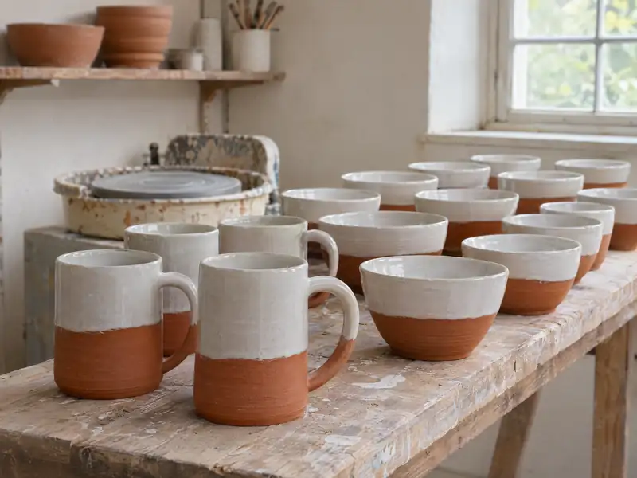

Metà smalto, metà terra.
Tazze, ciotole, piatti e brocche fatti al tornio, per la tavola di tutti i giorni. Sopra lo smalto bianco, sotto la terracotta lasciata cruda: è lì che si vede la mano.
Vedi i pezzi
Fin dove arriva lo smalto
Ogni pezzo si tiene per il piede e si immerge a mano nello smalto. La riga dove finisce, e la goccia che scende, non sono mai uguali due volte. Prova a immergere questa tazza.
I pezzi
Si lavano a mano. Due pezzi non saranno mai identici. Spedizione 9,90 €, gratis da 80 €, imballati uno per uno.